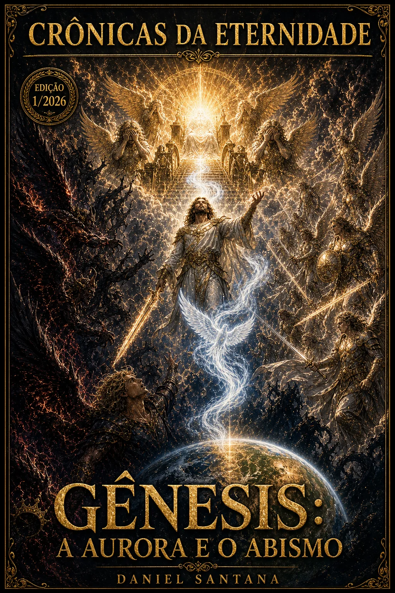
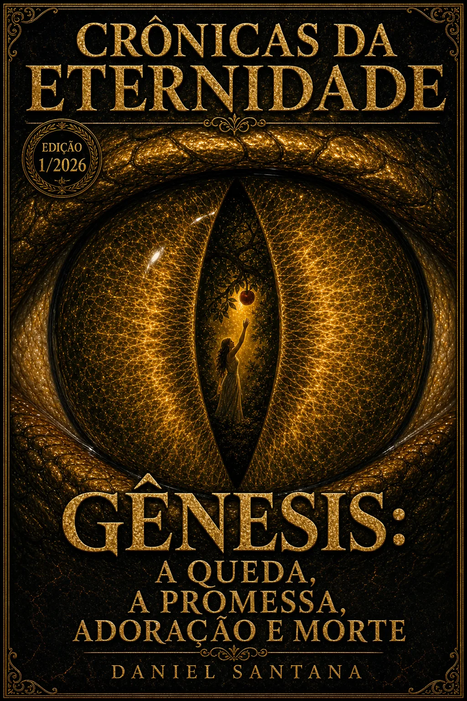
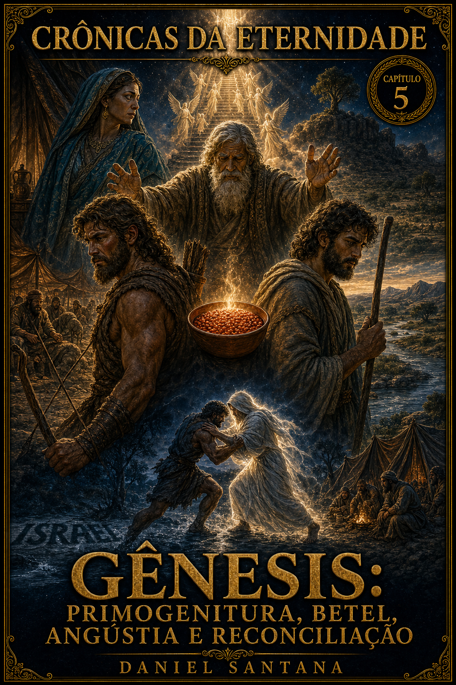
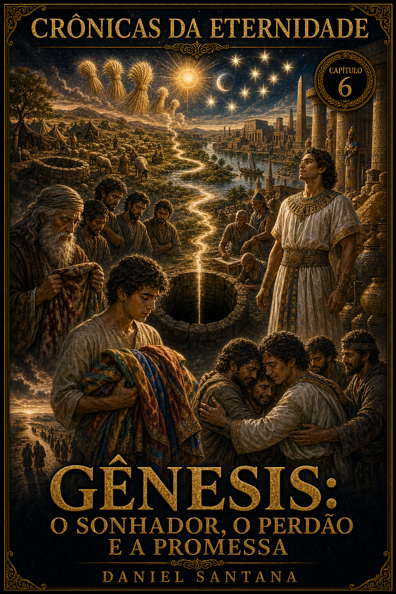
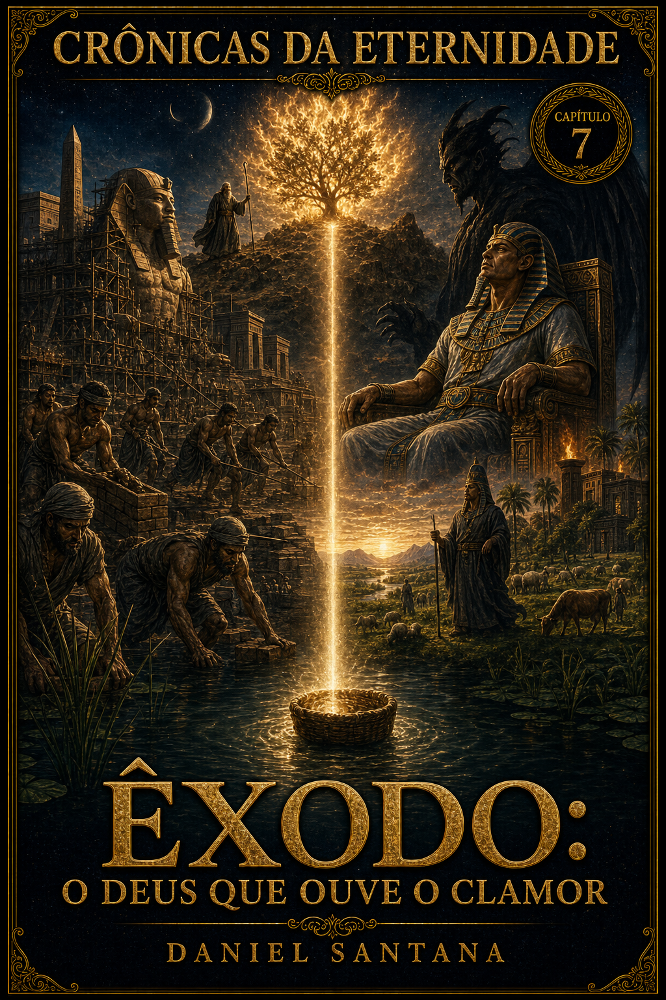
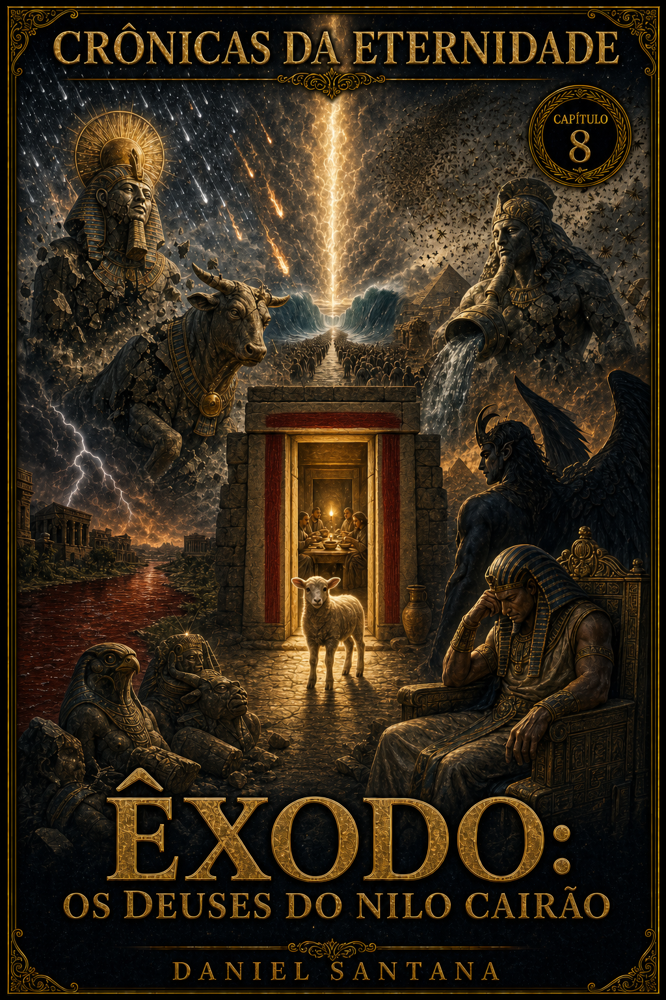
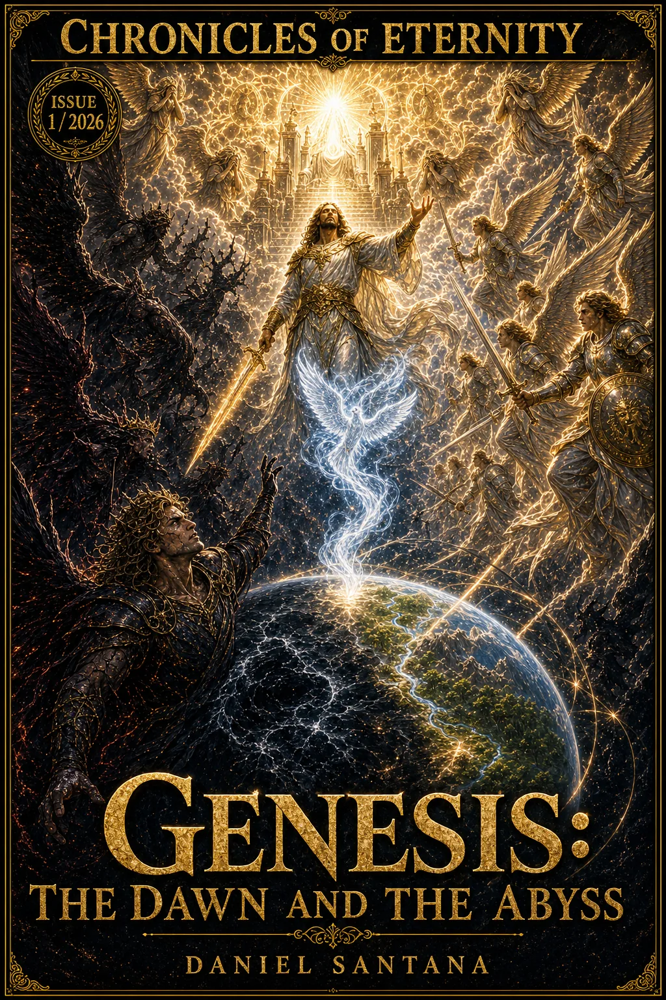
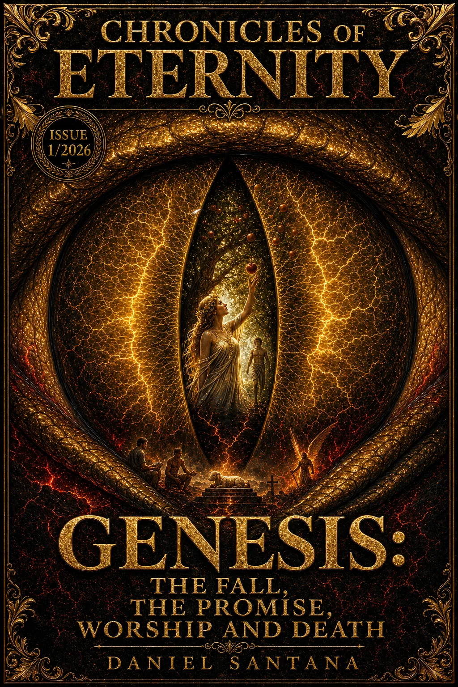
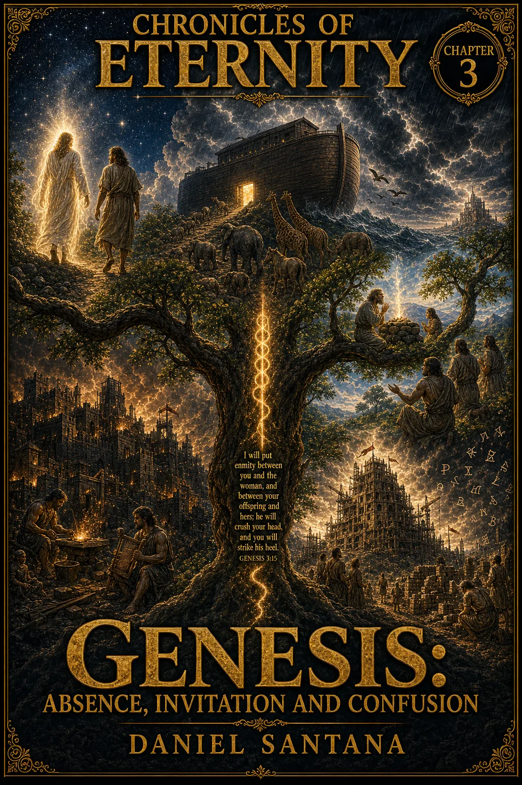

Fidelidade bíblica
Toda narrativa nasce da Bíblia e dos escritos de Ellen G. White, com âncoras teológicas listadas em cada volume.
A saga em HQ · Daniel Santana
Do Trono ao Apocalipse — a história bíblica em quadrinhos.
Uma série épica em HQ que recria a grande controvérsia entre Cristo e Satanás — da rebelião no Céu até a restauração final. Cada volume, um arco bíblico. Cada arco, uma janela de luz e abismo.
A série
Crônicas da Eternidade é uma série em quadrinhos que adapta a história bíblica como uma saga única e contínua: a grande controvérsia entre Cristo e Satanás, desenhada com reverência, ritmo cinematográfico e fundamento teológico.
Cada volume cobre um arco — começando por Gênesis, atravessando os patriarcas, o êxodo, os reinos, os profetas, os evangelhos e o Apocalipse. Uma jornada de luz e abismo, planejada para crescer edição por edição.
"Antes do tempo ter peso. Antes da matéria ter sombra. Havia o Céu — e nele, perfeição."— Volume 1, Prólogo
Os pilares da série
Toda narrativa nasce da Bíblia e dos escritos de Ellen G. White, com âncoras teológicas listadas em cada volume.
Composições verticais 2:3, paleta dourada para o sagrado e sombras profundas para o conflito.
Cada edição traz páginas extras com dossiês de personagens e suporte apologético em linguagem de HQ.
Todos os volumes são publicados em português e inglês — recurso pronto para missões e evangelismo digital.
A saga em volumes

DisponívelVolume 1
Rebelião e Criação
A origem do Grande Conflito, a queda de Lúcifer, a guerra no Céu e a criação da Terra.
Comprar Volume 1
DisponívelVolume 2
A Queda, a Promessa, a Adoração e a Morte
A tentação no Éden, a entrada do pecado, a primeira promessa de redenção e o conflito entre Caim e Abel.
Comprar Volume 2Volume 3
Ausência, Convite e Confusão
O testemunho de Enoque, a pregação de Noé, o Dilúvio e a Torre de Babel — a humanidade dividida entre o chamado de Deus e sua própria rebelião.
Comprar Volume 3Volume 4
O Chamado da Promessa
A jornada de Abraão, a aliança divina e o nascimento do povo que carregaria a promessa de redenção para o mundo.
Entrar na pré-lista
Fase de roteirizaçãoVolume 5
Jacó e Esaú
Primogenitura desprezada, bênção disputada, Betel, o Jaboque e a reconciliação que transforma Jacó em Israel.
Entrar na pré-lista
Fase de roteirizaçãoVolume 6
José no Egito
Os sonhos de José, a traição dos irmãos, o caminho pelo Egito, a providência divina e o perdão que preserva a promessa.
Entrar na pré-lista
Novo arcoVolume 7
O Deus que ouve o clamor
O arco Êxodo começa com o clamor do povo oprimido, o nascimento de Moisés e o Deus que prepara a libertação.
Acompanhar Êxodo
Novo arcoVolume 8
Os deuses do Nilo cairão
O confronto entre o Deus vivo e os poderes do Egito avança, enquanto os juízos abrem caminho para a libertação.
Acompanhar ÊxodoPróximos volumes
Patriarcas · Êxodo · Reinos · Profetas · Evangelhos · Apocalipse
A série segue arco por arco até o último livro da Bíblia. Inscreva-se para acompanhar os anúncios e pré-vendas.
Quero ser avisadoPrévia · Volume 1
Prévia · Volume 2
Prévia · Volume 3
Para quem é a série
Porta de entrada visual para temas bíblicos profundos.
Material para conversar sobre criação, liberdade, queda e redenção.
Arte dramática, quadros densos e uma saga planejada para crescer.
Recurso bilíngue PT/EN para evangelismo digital e estudos com jovens.


Volume 1 · Capas PT e EN
Comece a saga · Volume 1
O primeiro volume da série já está disponível no Kindle. Compra directa na Amazon — leitura imediata em qualquer dispositivo Kindle ou app oficial.
Disponível no Kindle
R$14,99

Volume 2 · Capas PT e EN
Continue a saga · Volume 2
O Volume 2 continua o Arco I — a entrada do inimigo no Éden, a queda de Adão e Eva, e a primeira promessa messiânica em Gênesis 3:15. Também disponível no Kindle.
Disponível no Kindle

Volume 3 · Capas PT e EN
Novo lançamento · Volume 3
O Volume 3 fecha o ciclo antediluviano — o testemunho de Enoque, a pregação de Noé, o Dilúvio e a Torre de Babel. Já disponível no Kindle, em português e em inglês.
Novo · disponível no Kindle
Compra directa via Amazon Kindle — pagamento seguro Amazon
Leitura imediata em qualquer Kindle, app Kindle ou web reader
Garantia de 7 dias — política de devolução padrão da Amazon
Lista de pré-venda
Entre na lista e seja avisado dos próximos lançamentos da saga — o Volume 4 e seguintes. Leitores dos volumes anteriores entram com desconto automático.
Sem spam. Apenas anúncios da série Crônicas da Eternidade.
Dúvidas rápidas
Uma série em HQ que recria a história bíblica como saga contínua, do Trono ao Apocalipse, com fundamento em Gênesis–Apocalipse e nos escritos de Ellen G. White.
A série é planejada arco por arco. Os Volumes 1 a 4 compõem o Arco — Gênesis: Aurora e o Abismo (Rebelião e Criação) · A Queda, a Promessa, Adoração e Morte · Ausência, Convite e Confusão · O Chamado da Promessa. Os próximos arcos cobrirão Êxodo, reinos, profetas, evangelhos e Apocalipse.
Os volumes são publicados directamente no Kindle (Amazon). Após a compra, o livro fica na sua biblioteca Amazon e é lido no Kindle (dispositivo ou app) sem download manual.
Sim. Lê na app Kindle (iOS/Android), no Kindle Cloud Reader (web), no Kindle para PC/Mac e em qualquer Kindle físico. A posição de leitura sincroniza entre eles via sua conta Amazon.
Não. A edição em inglês é roteirizada com linguagem direta para o público jovem (13–18), preservando a fidelidade teológica.
Os Volumes 1, 2 e 3 já estão disponíveis no Kindle, em português e em inglês — o Volume 3, "Ausência, Convite e Confusão", é o lançamento mais recente. O Volume 4, "O Chamado da Promessa", tem previsão para set/2026; entre na pré-lista para ser avisado.
Não. Basta uma conta Amazon e a app Kindle (gratuita) no telemóvel, tablet, PC ou Mac. Também há o Kindle Cloud Reader, que abre no browser sem instalar nada.
Volumes 1, 2 e 3 disponíveis no Kindle, em português e em inglês. Leitura imediata.
Comprar no Kindle